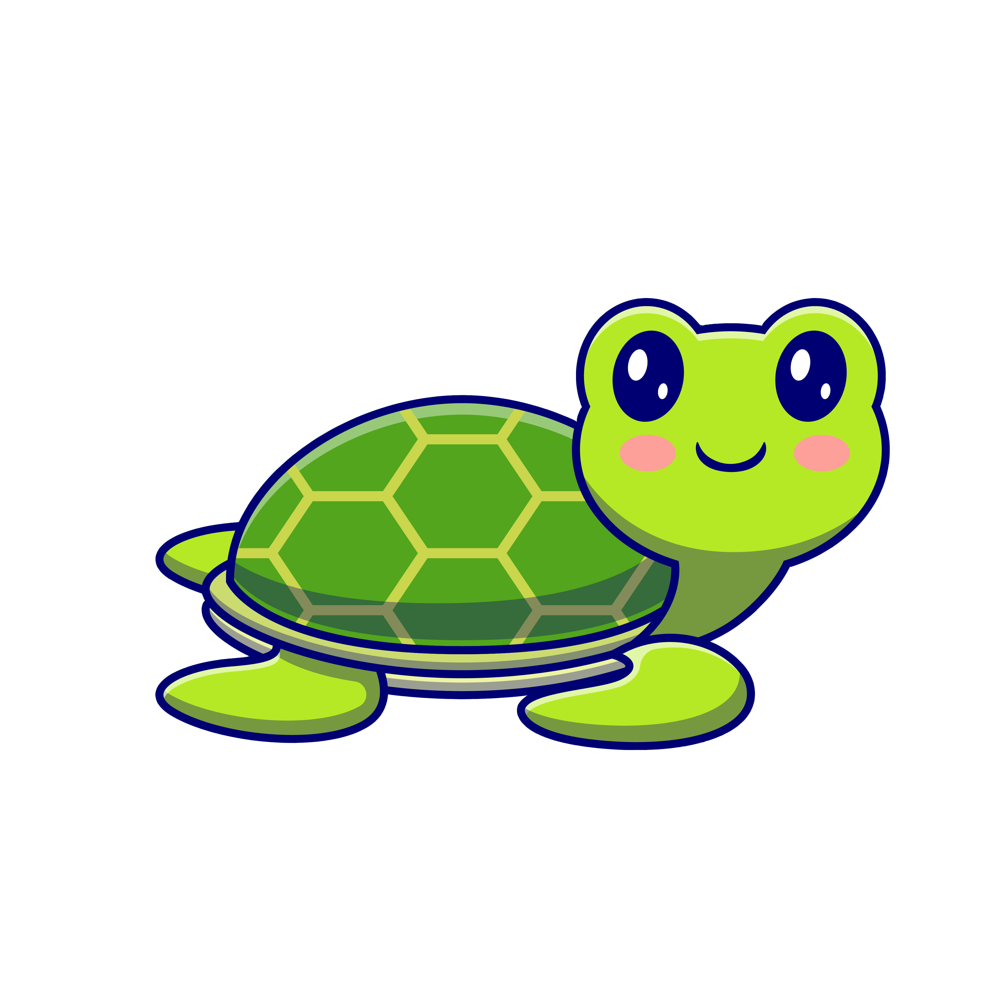
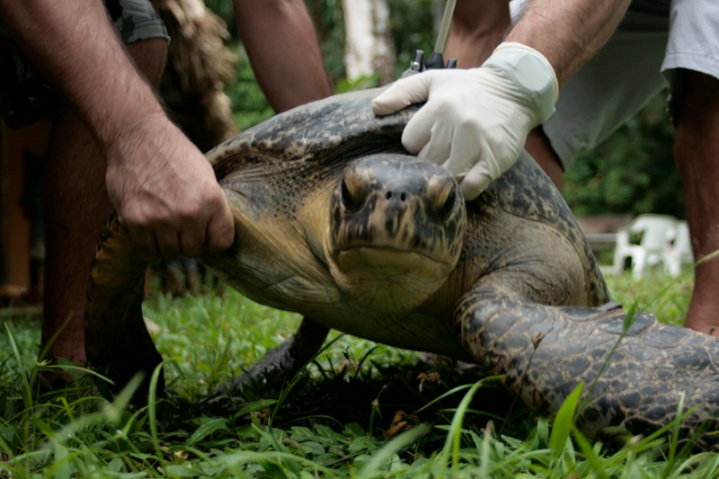
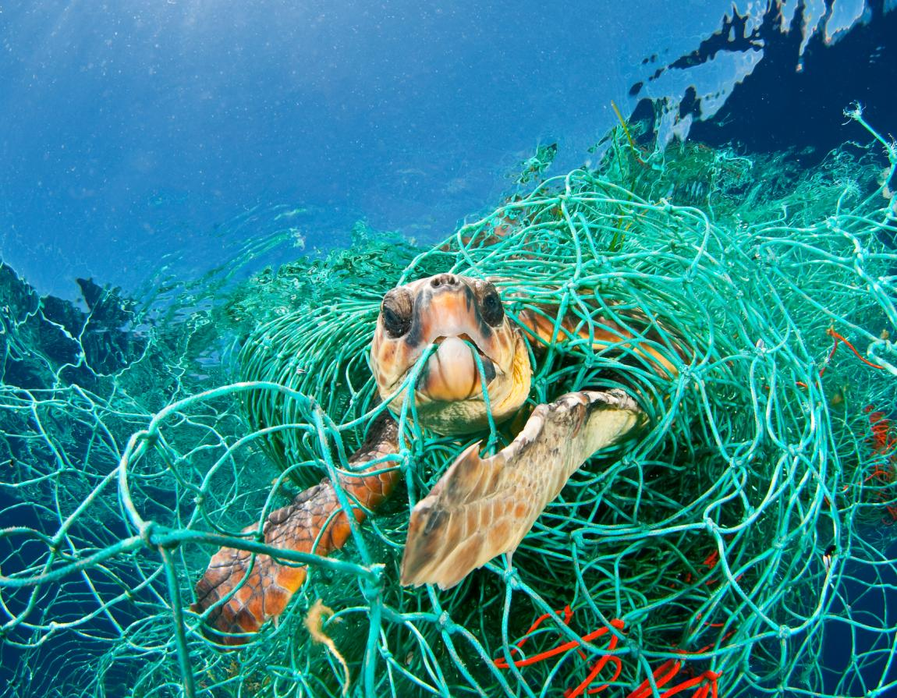

In recent years, it is evident that the mankind slaughter turtles and their eggs for consumption. Further, the disposed turtle shells are used for trading in markets in order to make invaluable products, including medicines.

Moreover, harmful oils and petroleum that are disposed into the rivers and ocean harm sea turtles to the extreme. The fishing industry is a grave menace to these innocent animals. When sea turtles encounter with discarded fishing nets, they consume them mistaken for seaweed; hence, detrimenting them.

The nature also contributes in the demise of sea turtles. Due to an increase in the temperature, the sea turtles have difficulties in laying their eggs, especially in beaches. This gradually results in in lower output of its species which eventually leads to the extinction of sea turtles.